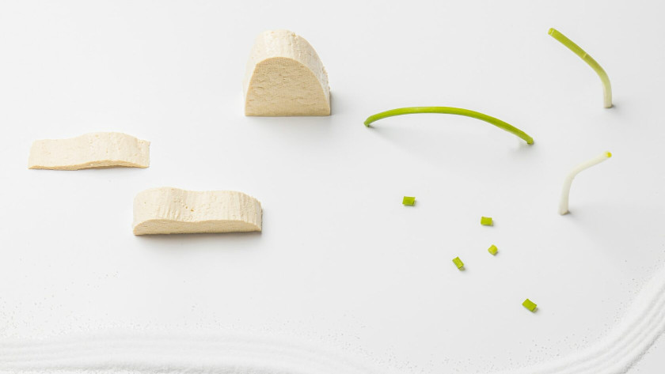
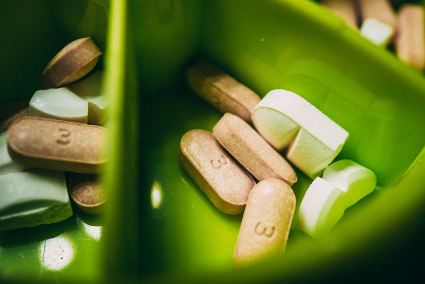

Здоровый веганский рацион: основы
Смена типа питания — ответственное событие. Окажется веганство для вас лучшим решением в жизни или разочарует, зависит от того, насколько хорошо вы разберётесь в матчасти.
Если вы хотите сохранить и укрепить здоровье после отказа от животных продуктов, а не получить гормональный сбой и выпадающие волосы через полгода — эта инструкция для вас.
Шаг 1: внимание на белок и жиры

Растительная пища — углеводная пища, поэтому важно удержаться от соблазна скатиться в углеводную яму. Белок и жиры, хотя бы первое время, надо считать.
Норма белка — 1г на кг веса, то есть при весе в 60кг в день нужно съедать от 60г белка. Лучшие источники: бобовые и цельнозерновые крупы. Не получается набрать норму белка из еды? Подключаем протеин в добавках.
Жиры считаем тоже из расчета ~1г на кг веса. Масла, даже нерафинированные, сводим к минимуму и заменяем цельными источниками жиров — орехами, семенами и авокадо. В них помимо жира есть еще и белок, и клетчатка, и витамины-минералы.
Содержание белка и жиров в продуктах отслеживаем с помощью приложений: cronometer, fatsecret.
Когда набрали белок и жиры, можно добавить фрукты, сухофрукты и другие углеводы. Этот шаг недаром первый — от того, насколько ответственно вы пойдете к белку и жирам в питании, зависит не только ваше здоровье, но и пищевое поведение. Мало белка и жиров = срывы и «волчий голод».
Шаг 2: железо и кальций

Эти двое просядут первыми, если не планировать рацион грамотно. Подключаем на ежедневной основе бобовые, черный кунжут, чиа, обогащенное растительное молоко, темно-зеленую листовую зелень.
Помните, что железо и кальций подвержены влиянию фитиновой кислоты. Это вещество содержится во всех крупах, бобовых, орехах и семенах — оно «связывает» минеральные вещества и снижает их биодоступность. Чтобы выжать максимум пользы, замачивайте перечисленные выше продукты в простой чистой воде хотя бы на ночь — это активирует фермент фитазу, который расщепляет фитиновую кислоту и повышает усвояемость полезных веществ.
Не стоит пить кофе после еды, богатой железом — кофеин также снижает усвоение железа из растительных продуктов. Отказываться от него не надо, но выдерживать паузу в 2-3 часа стоит.
Суточная норма кальция — 1000мг, железа — 18мг для женщин и 8мг для мужчин.
Шаг 3: подключаем добавки

Плохие новости: совсем без добавок на веганском питании не получится. Просто потому что в растительных продуктах нет витаминов В12 и D — их можно получить только из животных продуктов, в частности из мяса и жирной рыбы.
Хорошие новости: грамотное использование добавок на растительном питании не только безопасно, но и официально рекомендовано.
План-минимум — уже упомянутые выше витамины В12 и D, которые необходимы каждому, кто не употребляет животные продукты. Перед началом приема любых добавок надо сдать анализы и оценить статус каждого конкретного вещества в вашем организме — без этого невозможно ни подобрать адекватную дозировку, ни отследить динамику.
Помните, что 99% бадов не имеют доказанной эффективности, не являются безопасными и не рекомендованы ни одной организацией здравоохранения в мире. К ним относятся спирулина, мака перуанская, подсолнечный лецитин и другие широко разрекламированные хиты бад-чартов по версии женских блогеров.